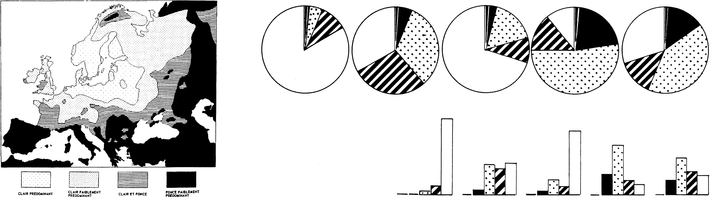

Welcome
You are being invited to participate in a study titled “Design Characterization for Black-and-White Textures in Visualization.” This study is conducted by Tingying He, Petra Isenberg, and Tobias Isenberg from Inria and the University Paris-Saclay (France).
The purpose of this study is to explore how to use black-and-white texture in visual data representations, like in the following historic examples:

Please ensure that you are opening this experiment with the Chrome browser. You cannot navigate back to previous pages.
Please respond to this study only if you:
- are a fluent speaker of English,
- are of legal age (18 years in most countries), and
- consider yourself experienced on the topic of visualization and in design.
This experiment will take around 25 minutes.
We thank you for your interest in participating in this study. Please click the "Next" button below to proceed to the informed consent.